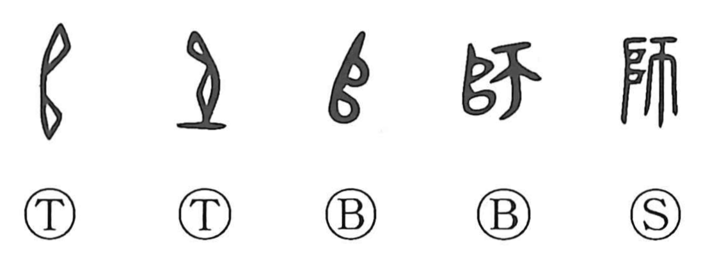

Explanation
師 joins 𠂤, a portion of consecrated meat, with 帀, here a curved meat-cutting knife with a guard. Before a campaign, the offering was made at the army's shrine. A commander cut off a portion and carried it with the departing force. The left-hand shape is the sacrificial meat itself.
That meat could stand for the army under its protection. In early inscriptions, 𠂤 alone names an army or its commander. Adding a support below marks the place where it was installed; sheltering it in a building gives the setting represented by 官. Dividing the meat accompanied the dispatch of separate forces.
師 therefore names the military officer, commander, and army. When former commanders undertook the education of their clan's young people, instruction and military music became part of the same traditional office. The word consequently acquired its familiar sense of a teacher and transmitter of an art or discipline.